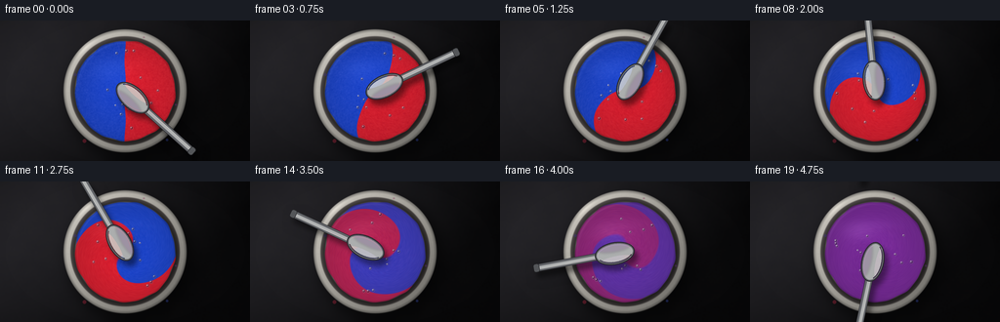
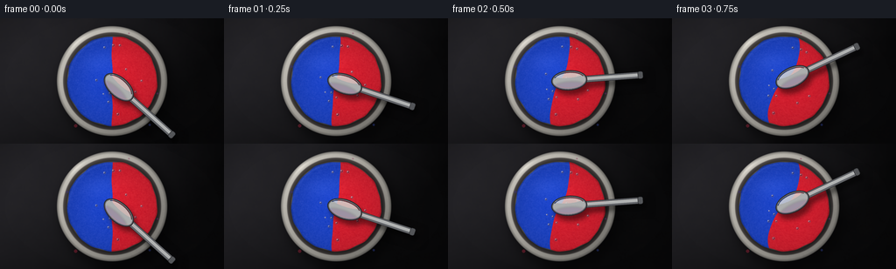
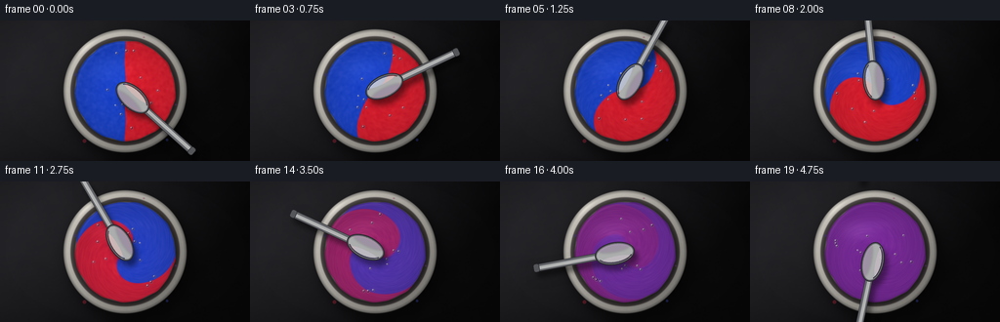
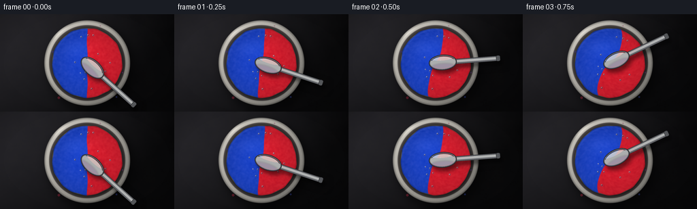

CODING AGENTS AS PIXEL WORLD MODELS
traex/DeepSeek-V4.1-Flash · phygen_121
点击播放 · 原生 RGB 像素
逐轮保存的候选
回放视频、检查图与代码变化。
每份候选均可单独播放。实际图片检查记录在下方工具轨迹中。
候选 01播放与检查图
点击播放 · 原生 RGB 像素


展开代码变化
--- 上一保存版本
+++ 本次保存版本
@@ -0,0 +1,465 @@
+"""Procedural red-and-blue paint mixing video.
+
+The entire sequence is rendered from mathematical fields and local image
+operations. A differential swirl advects a two-color paint boundary while
+progressive diffusion and a stirred vortex blend it into purple.
+"""
+
+from __future__ import annotations
+
+import json
+from pathlib import Path
+
+import numpy as np
+from PIL import Image, ImageDraw, ImageFilter
+from scipy.ndimage import gaussian_filter, map_coordinates
+
+import artifact_io
+
+
+CASE_DIR = Path(__file__).resolve().parent
+SPEC = json.loads((CASE_DIR / "task_spec.json").read_text())
+OUT_W = int(SPEC["width"])
+OUT_H = int(SPEC["height"])
+N_FRAMES = int(SPEC["frames"])
+FPS = float(SPEC["fps"])
+
+# Supersampling makes the circular bowl and thin spoon edge clean at 256x144.
+SS = 4
+W, H = OUT_W * SS, OUT_H * SS
+CX, CY = W * 0.5, H * 0.5
+R_OUTER = 63.5 * SS
+R_RIM_IN = 56.0 * SS
+R_PAINT = 51.3 * SS
+
+
+def smoothstep(edge0: float, edge1: float, values: np.ndarray) -> np.ndarray:
+ x = np.clip((values - edge0) / (edge1 - edge0), 0.0, 1.0)
+ return x * x * (3.0 - 2.0 * x)
+
+
+def scalar_smoothstep(edge0: float, edge1: float, value: float) -> float:
+ x = min(max((value - edge0) / (edge1 - edge0), 0.0), 1.0)
+ return x * x * (3.0 - 2.0 * x)
+
+
+def soft_circle(
+ x: np.ndarray, y: np.ndarray, center_x: float, center_y: float, radius: float
+) -> np.ndarray:
+ distance = np.hypot(x - center_x, y - center_y)
+ return 1.0 - smoothstep(radius - 0.9 * SS, radius + 0.9 * SS, distance)
+
+
+def composite_rgb(
+ image: np.ndarray, color: np.ndarray, alpha: np.ndarray
+) -> np.ndarray:
+ a = alpha[..., None]
+ return image * (1.0 - a) + color * a
+
+
+def resize_noise(
+ source: np.ndarray, width: int, height: int, resample: Image.Resampling
+) -> np.ndarray:
+ image = Image.fromarray(source.astype(np.float32), mode="F")
+ return np.asarray(image.resize((width, height), resample), dtype=np.float32)
+
+
+def build_background_and_bowl() -> tuple[np.ndarray, np.ndarray]:
+ yy, xx = np.mgrid[0:H, 0:W].astype(np.float32)
+ u = (xx - CX) / R_OUTER
+ v = (yy - CY) / R_OUTER
+ r_canvas = np.hypot((xx - CX) / (W * 0.68), (yy - CY) / (H * 0.74))
+
+ rng = np.random.default_rng(24)
+ coarse = rng.normal(0.0, 1.0, (48, 80)).astype(np.float32)
+ coarse = gaussian_filter(coarse, sigma=1.3)
+ coarse = resize_noise(coarse, W, H, Image.Resampling.BILINEAR)
+ medium = rng.normal(0.0, 1.0, (180, 320)).astype(np.float32)
+ medium = gaussian_filter(medium, sigma=0.7)
+ medium = resize_noise(medium, W, H, Image.Resampling.BILINEAR)
+
+ # Warm graphite work surface with a restrained, directional studio light.
+ light = np.clip(0.58 - 0.23 * u - 0.17 * v, 0.25, 1.05)
+ base = np.empty((H, W, 3), dtype=np.float32)
+ base[..., 0] = 39.0 * light + 1.6 * coarse + 0.7 * medium
+ base[..., 1] = 38.0 * light + 1.4 * coarse + 0.55 * medium
+ base[..., 2] = 42.0 * light + 1.1 * coarse + 0.45 * medium
+ vignette = np.clip(1.04 - 0.28 * r_canvas**1.65, 0.56, 1.0)
+ base *= vignette[..., None]
+
+ # Broad contact shadow, offset toward the lower right.
+ shadow_radius = R_OUTER * 1.025
+ shadow_mask = soft_circle(xx, yy, CX + 5.0 * SS, CY + 7.0 * SS, shadow_radius)
+ shadow_mask = gaussian_filter(shadow_mask, sigma=6.2 * SS)
+ base *= (1.0 - 0.50 * shadow_mask[..., None])
+
+ image = base
+ theta = np.arctan2(v, u)
+ radial = np.hypot(u, v)
+ outer_alpha = 1.0 - smoothstep(0.982, 1.004, radial)
+
+ # A quiet, slightly warm ceramic rim.
+ top_left = np.clip(-0.66 * np.cos(theta) - 0.66 * np.sin(theta), -1.0, 1.0)
+ ceramic_light = 0.76 + 0.18 * top_left + 0.08 * (1.0 - radial)
+ fine = 1.7 * medium + 0.8 * coarse
+ rim_color = np.empty((H, W, 3), dtype=np.float32)
+ rim_color[..., 0] = 207.0 * ceramic_light + fine
+ rim_color[..., 1] = 203.0 * ceramic_light + fine
+ rim_color[..., 2] = 194.0 * ceramic_light + 0.85 * fine
+
+ # Darker bevels at the outside and at the inner lip.
+ outer_bevel = smoothstep(0.934, 1.0, radial)
+ rim_color *= (1.0 - 0.34 * outer_bevel[..., None])
+ inner_bevel = 1.0 - smoothstep(R_RIM_IN / R_OUTER - 0.035, R_RIM_IN / R_OUTER, radial)
+ rim_color *= (1.0 - 0.22 * inner_bevel[..., None])
+ image = composite_rgb(image, rim_color, outer_alpha)
+
+ # Recessed inner wall.
+ wall_alpha = 1.0 - smoothstep(R_RIM_IN - 0.8 * SS, R_RIM_IN + 0.8 * SS, np.hypot(xx - CX, yy - CY))
+ wall_alpha *= smoothstep(R_PAINT - 1.2 * SS, R_PAINT + 0.8 * SS, np.hypot(xx - CX, yy - CY))
+ distance = np.hypot(xx - CX, yy - CY)
+ wall_t = np.clip((distance - R_PAINT) / max(1.0, R_RIM_IN - R_PAINT), 0.0, 1.0)
+ wall_light = 0.70 + 0.22 * top_left + 0.18 * wall_t
+ wall_color = np.empty((H, W, 3), dtype=np.float32)
+ wall_color[..., 0] = 83.0 * wall_light + 0.6 * medium
+ wall_color[..., 1] = 78.0 * wall_light + 0.5 * medium
+ wall_color[..., 2] = 76.0 * wall_light + 0.4 * medium
+ image = composite_rgb(image, wall_color, wall_alpha)
+
+ # The deepest shadow sits just below the paint edge.
+ paint_edge_shadow = soft_circle(xx, yy, CX, CY, R_PAINT + 3.2 * SS)
+ paint_edge_shadow *= 1.0 - soft_circle(xx, yy, CX, CY, R_PAINT - 1.4 * SS)
+ paint_edge_shadow = gaussian_filter(paint_edge_shadow, sigma=1.4 * SS)
+ image *= (1.0 - 0.34 * paint_edge_shadow[..., None])
+
+ # A narrow specular crescent on the upper-left ceramic lip.
+ rim_ring = smoothstep(R_RIM_IN / R_OUTER, 0.955, radial)
+ rim_ring *= 1.0 - smoothstep(0.985, 1.0, radial)
+ angular_spec = np.exp(-((theta + 2.30) / 0.22) ** 2)
+ image += (rim_ring * angular_spec * 36.0)[..., None] * np.array([1.0, 0.98, 0.94])
+
+ # Small, muted paint flecks on the inner lip, mostly near the lower edge.
+ fleck_layer = Image.new("RGBA", (W, H), (0, 0, 0, 0))
+ fleck_draw = ImageDraw.Draw(fleck_layer)
+ flecks = [
+ (-0.75, 0.93, 1.9, (150, 34, 55, 115)),
+ (0.78, 0.91, 1.3, (47, 60, 145, 105)),
+ (0.94, 0.26, 1.1, (92, 41, 119, 100)),
+ (-0.92, -0.30, 1.4, (60, 48, 126, 95)),
+ (0.35, -0.99, 0.9, (128, 39, 80, 80)),
+ ]
+ for fx, fy, fr, color in flecks:
+ px = CX + fx * (R_PAINT + 4.0 * SS)
+ py = CY + fy * (R_PAINT + 4.0 * SS)
+ radius = fr * SS
+ fleck_draw.ellipse(
+ (px - radius, py - radius, px + radius, py + radius), fill=color
+ )
+ flecks_array = np.asarray(fleck_layer, dtype=np.float32) / 255.0
+ image = image * (1.0 - flecks_array[..., 3:4]) + flecks_array[..., :3] * 255.0 * flecks_array[..., 3:4]
+
+ return np.clip(image, 0.0, 255.0), np.clip(base, 0.0, 255.0)
+
+
+def build_paint_texture() -> np.ndarray:
+ rng = np.random.default_rng(81)
+ texture = rng.normal(0.0, 1.0, (256, 256)).astype(np.float32)
+ texture = gaussian_filter(texture, sigma=1.1)
+ texture -= texture.mean()
+ texture /= max(texture.std(), 1e-6)
+ return texture.astype(np.float32)
+
+
+def paint_field(
+ xx: np.ndarray,
+ yy: np.ndarray,
+ progress: float,
+ texture: np.ndarray,
+) -> tuple[np.ndarray, np.ndarray, np.ndarray, np.ndarray]:
+ u = (xx - CX) / R_PAINT
+ v = (yy - CY) / R_PAINT
+ radius = np.hypot(u, v)
+ theta = np.arctan2(v, u)
+
+ # The paint edge is irregular at pixel scale rather than a perfect disc.
+ edge_radius = 1.0 + 0.010 * np.sin(9.0 * theta + 0.6)
+ edge_radius += 0.006 * np.sin(17.0 * theta - 1.2)
+ paint_alpha = 1.0 - smoothstep(edge_radius - 0.008, edge_radius + 0.010, radius)
+
+ p = float(np.clip(progress, 0.0, 1.0))
+ swirl = 2.80 * np.pi * (0.25 * p + 0.75 * p**1.42)
+ differential = 0.94 - 0.55 * radius**1.58
+ displacement = swirl * differential
+ displacement += 0.075 * p * np.sin(5.0 * theta - 10.0 * p) * (1.0 - 0.7 * radius)
+
+ source_theta = theta - displacement
+ source_radius = radius * (
+ 1.0 + 0.032 * p * np.sin(6.0 * theta + 4.0 * p) * (1.0 - 0.55 * radius)
+ )
+ xs = source_radius * np.cos(source_theta)
+ ys = source_radius * np.sin(source_theta)
+
+ # Wavy interface and fine secondary folds keep the material boundary organic.
+ boundary = xs
+ boundary += (0.012 + 0.010 * p) * np.sin(8.0 * ys + 2.2 * p)
+ boundary += 0.007 * p * np.sin(16.0 * xs - 7.0 * ys + 3.0 * p)
+
+ diffusion = 0.007 + 0.030 * p**1.45 + 0.115 * p**8
+ marbled = smoothstep(-diffusion, diffusion, boundary)
+ blended = scalar_smoothstep(0.57, 0.985, p)
+ mixture = marbled * (1.0 - blended) + 0.5 * blended
+
+ # Very small amount of physical unevenness remains even after color blending.
+ material_noise = map_coordinates(
+ texture,
+ [
+ np.clip((ys + 1.0) * 127.0, 0.0, 255.0),
+ np.clip((xs + 1.0) * 127.0, 0.0, 255.0),
+ ],
+ order=1,
+ mode="reflect",
+ )
+ mixture = np.clip(mixture + material_noise * 0.0065 * (1.0 - 0.55 * blended), 0.0, 1.0)
+
+ return mixture, paint_alpha, radius, source_theta
+
+
+def paint_rgb(
+ mixture: np.ndarray,
+ radius: np.ndarray,
+ theta: np.ndarray,
+ material_noise: np.ndarray,
+ progress: float,
+) -> np.ndarray:
+ # Piecewise pigment interpolation gives a convincing red + blue -> violet
+ # transition instead of a desaturated arithmetic average.
+ blue = np.array([21.0, 61.0, 194.0], dtype=np.float32)
+ purple = np.array([111.0, 34.0, 143.0], dtype=np.float32)
+ red = np.array([211.0, 23.0, 39.0], dtype=np.float32)
+ color = np.empty(mixture.shape + (3,), dtype=np.float32)
+ low = mixture <= 0.5
+ t_low = (mixture / 0.5)[..., None]
+ t_high = ((mixture - 0.5) / 0.5)[..., None]
+ color[low] = blue + (purple - blue) * t_low[low]
+ color[~low] = purple + (red - purple) * t_high[~low]
+
+ # Slight radial darkening at the bowl wall and a broad wet sheen.
+ shade = 0.86 + 0.15 * (1.0 - np.clip(radius, 0.0, 1.0) ** 1.55)
+ shade += 0.035 * np.cos(theta + 2.30) * (1.0 - radius)
+ color *= shade[..., None]
+ color += material_noise[..., None] * 4.2
+
+ # Soft studio reflection on the paint surface.
+ u = (np.mgrid[0:H, 0:W][1].astype(np.float32) - CX) / R_PAINT
+ v = (np.mgrid[0:H, 0:W][0].astype(np.float32) - CY) / R_PAINT
+ sheen = np.exp(-(((u + 0.34) / 0.33) ** 2 + ((v + 0.40) / 0.18) ** 2))
+ sheen += 0.42 * np.exp(-(((u + 0.04) / 0.52) ** 2 + ((v + 0.54) / 0.11) ** 2))
+ color += (8.0 + 6.0 * scalar_smoothstep(0.72, 1.0, progress)) * sheen[..., None]
+
+ # A fine darker contact line where paint meets the ceramic wall.
+ edge = smoothstep(0.955, 1.012, radius)
+ color *= (1.0 - 0.20 * edge[..., None])
+ return np.clip(color, 0.0, 255.0)
+
+
+def draw_bubbles(image: Image.Image, progress: float) -> None:
+ """Draw a few small glossy air pockets carried by the vortex."""
+ rng = np.random.default_rng(403)
+ count = 13
+ radial = rng.uniform(0.16, 0.84, count)
+ angles = rng.uniform(-np.pi, np.pi, count)
+ sizes = rng.uniform(0.75, 1.75, count)
+ p = float(np.clip(progress, 0.0, 1.0))
+ swirl = 2.80 * np.pi * (0.25 * p + 0.75 * p**1.42)
+ draw = ImageDraw.Draw(image, "RGBA")
+ for r0, a0, size in zip(radial, angles, sizes):
+ displacement = swirl * (0.94 - 0.55 * r0**1.58)
+ angle = a0 + displacement
+ px = CX + r0 * R_PAINT * np.cos(angle)
+ py = CY + r0 * R_PAINT * np.sin(angle)
+ radius = size * SS
+ draw.ellipse(
+ (px - radius, py - radius, px + radius, py + radius),
+ fill=(22, 12, 34, 95),
+ outline=(235, 222, 238, 70),
+ width=max(1, SS // 2),
+ )
+ glint = max(0.65 * SS, radius * 0.36)
+ gx = px - radius * 0.28
+ gy = py - radius * 0.28
+ draw.ellipse(
+ (gx - glint, gy - glint, gx + glint, gy + glint),
+ fill=(255, 250, 255, 125),
+ )
+
+
+def build_spoon_layers() -> tuple[Image.Image, Image.Image]:
+ spoon = Image.new("RGBA", (W, H), (0, 0, 0, 0))
+ draw = ImageDraw.Draw(spoon, "RGBA")
+
+ handle_start = CX + 20.0 * SS
+ handle_end = CX + 94.0 * SS
+ handle_half = 3.7 * SS
+ draw.rounded_rectangle(
+ (handle_start, CY - handle_half, handle_end, CY + handle_half),
+ radius=3.2 * SS,
+ fill=(99, 101, 105, 255),
+ outline=(41, 42, 45, 255),
+ width=max(1, SS // 2),
+ )
+ # Brushed metal center and a crisp highlight along the upper edge.
+ draw.rounded_rectangle(
+ (handle_start + 2.0 * SS, CY - 1.35 * SS, handle_end - 1.0 * SS, CY + 1.25 * SS),
+ radius=1.2 * SS,
+ fill=(176, 178, 178, 255),
+ )
+ draw.line(
+ (handle_start + 3.0 * SS, CY - 1.7 * SS, handle_end - 2.0 * SS, CY - 1.7 * SS),
+ fill=(231, 231, 226, 210),
+ width=max(1, int(0.55 * SS)),
+ )
+ draw.rounded_rectangle(
+ (handle_end - 5.0 * SS, CY - handle_half - 0.6 * SS, handle_end + 1.0 * SS, CY + handle_half + 0.6 * SS),
+ radius=2.2 * SS,
+ fill=(84, 86, 89, 255),
+ outline=(38, 39, 41, 255),
+ width=max(1, SS // 2),
+ )
+
+ # Spoon bowl: a shallow steel ellipse with a dark rim and concave shading.
+ bbox = (CX - 10.0 * SS, CY - 11.5 * SS, CX + 31.0 * SS, CY + 11.5 * SS)
+ draw.ellipse(bbox, fill=(106, 108, 112, 255), outline=(39, 40, 43, 255), width=SS)
+ inner_bbox = (
+ bbox[0] + 2.0 * SS,
+ bbox[1] + 2.0 * SS,
+ bbox[2] - 2.0 * SS,
+ bbox[3] - 2.0 * SS,
+ )
+ draw.ellipse(inner_bbox, fill=(172, 174, 174, 255))
+ highlight_bbox = (
+ bbox[0] + 5.0 * SS,
+ bbox[1] + 3.5 * SS,
+ bbox[2] - 7.0 * SS,
+ bbox[1] + 8.5 * SS,
+ )
+ draw.ellipse(highlight_bbox, fill=(224, 224, 218, 205))
+ draw.arc(
+ (bbox[0] + 2.2 * SS, bbox[1] + 2.2 * SS, bbox[2] - 2.2 * SS, bbox[3] - 2.2 * SS),
+ start=205,
+ end=335,
+ fill=(61, 62, 65, 180),
+ width=max(1, SS),
+ )
+ draw.arc(
+ (bbox[0] + 3.0 * SS, bbox[1] + 3.0 * SS, bbox[2] - 3.0 * SS, bbox[3] - 3.0 * SS),
+ start=20,
+ end=158,
+ fill=(242, 240, 232, 165),
+ width=max(1, SS // 2),
+ )
+
+ # A subtle colored reflection on the underside of the steel.
+ reflection = Image.new("RGBA", (W, H), (0, 0, 0, 0))
+ reflection_draw = ImageDraw.Draw(reflection, "RGBA")
+ reflection_draw.ellipse(
+ (bbox[0] + 3.0 * SS, CY + 1.5 * SS, bbox[2] - 4.0 * SS, bbox[3] - 1.3 * SS),
+ fill=(112, 58, 130, 62),
+ )
+ reflection = reflection.filter(ImageFilter.GaussianBlur(1.2 * SS))
+ spoon = Image.alpha_composite(spoon, reflection)
+ return spoon, spoon.getchannel("A")
+
+
+def rotate_layer(layer: Image.Image, angle_degrees: float) -> Image.Image:
+ return layer.rotate(
+ angle_degrees,
+ resample=Image.Resampling.BICUBIC,
+ center=(CX, CY),
+ expand=False,
+ )
+
+
+def render_frames() -> list[np.ndarray]:
+ yy, xx = np.mgrid[0:H, 0:W].astype(np.float32)
+ bowl, _ = build_background_and_bowl()
+ texture = build_paint_texture()
+ spoon, _ = build_spoon_layers()
+ frames: list[np.ndarray] = []
+
+ for index in range(N_FRAMES):
+ progress = index / (N_FRAMES - 1)
+ mixture, alpha, radius, theta = paint_field(xx, yy, progress, texture)
+ color = paint_rgb(mixture, radius, theta, texture[:1, :1], progress)
+
+ # Material texture follows the same source-space flow as the pigment.
+ u = (xx - CX) / R_PAINT
+ v = (yy - CY) / R_PAINT
+ rad = np.hypot(u, v)
+ ang = np.arctan2(v, u)
+ p = progress
+ swirl = 2.80 * np.pi * (0.25 * p + 0.75 * p**1.42)
+ source_theta = ang - swirl * (0.94 - 0.55 * rad**1.58)
+ source_radius = rad
+ xs = source_radius * np.cos(source_theta)
+ ys = source_radius * np.sin(source_theta)
+ material_texture = map_coordinates(
+ texture,
+ [
+ np.clip((ys + 1.0) * 127.0, 0.0, 255.0),
+ np.clip((xs + 1.0) * 127.0, 0.0, 255.0),
+ ],
+ order=1,
+ mode="reflect",
+ )
+ color += material_texture[..., None] * (2.2 - 0.7 * p)
+
+ # A narrow specular rim where the liquid catches the softbox.
+ sheen_ring = np.exp(-((rad - 0.965) / 0.028) ** 2)
+ sheen_ring *= np.clip(np.cos(ang + 2.25), 0.0, 1.0) ** 2
+ color += (sheen_ring * 11.0)[..., None]
+
+ frame = composite_rgb(bowl.copy(), color, alpha)
+ frame_image = Image.fromarray(np.clip(frame, 0.0, 255.0).astype(np.uint8), "RGB")
+
+ draw_bubbles(frame_image, progress)
+
+ # Spoon: rotate around the bowl center; a world-space offset makes the
+ # contact shadow read as a separate cast shadow.
+ angle = -42.0 + 300.0 * p + 24.0 * np.sin(2.0 * np.pi * p)
+ rotated = rotate_layer(spoon, angle)
+ rotated_alpha = np.asarray(rotated.getchannel("A"), dtype=np.float32) / 255.0
+ shifted = np.roll(rotated_alpha, int(3.8 * SS), axis=1)
+ shifted = np.roll(shifted, int(5.8 * SS), axis=0)
+ shadow_alpha = gaussian_filter(shifted, sigma=2.8 * SS) * 0.50
+ frame_array = np.asarray(frame_image, dtype=np.float32)
+ frame_array *= (1.0 - shadow_alpha[..., None])
+ frame_image = Image.fromarray(np.clip(frame_array, 0.0, 255.0).astype(np.uint8), "RGB")
+ frame_image = Image.alpha_composite(frame_image.convert("RGBA"), rotated).convert("RGB")
+
+ # Tiny final vignette keeps the eye on the paint.
+ final_array = np.asarray(frame_image, dtype=np.float32)
+ vignette = np.clip(
+ 1.035
+ - 0.075
+ * np.hypot((xx - CX) / (W * 0.70), (yy - CY) / (H * 0.76)) ** 2,
+ 0.91,
+ 1.0,
+ )
+ final_array *= vignette[..., None]
+
+ frame_image = Image.fromarray(np.clip(final_array, 0.0, 255.0).astype(np.uint8), "RGB")
+ frame_image = frame_image.resize((OUT_W, OUT_H), Image.Resampling.LANCZOS)
+ frames.append(np.asarray(frame_image, dtype=np.uint8))
+ print(f"rendered frame {index + 1:02d}/{N_FRAMES}", flush=True)
+
+ return frames
+
+
+def main() -> None:
+ frames = np.stack(render_frames(), axis=0)
+ artifact_io.save(frames, CASE_DIR)
+ print(f"saved {len(frames)} frames at {OUT_W}x{OUT_H}, {FPS:g} fps")
+
+
+if __name__ == "__main__":
+ main()
候选 02播放与检查图
点击播放 · 原生 RGB 像素


展开代码变化
--- 上一保存版本
+++ 本次保存版本
@@ -64,7 +64,7 @@
return np.asarray(image.resize((width, height), resample), dtype=np.float32)
-def build_background_and_bowl() -> tuple[np.ndarray, np.ndarray]:
+def build_background_and_bowl() -> np.ndarray:
yy, xx = np.mgrid[0:H, 0:W].astype(np.float32)
u = (xx - CX) / R_OUTER
v = (yy - CY) / R_OUTER
@@ -158,13 +158,13 @@
flecks_array = np.asarray(fleck_layer, dtype=np.float32) / 255.0
image = image * (1.0 - flecks_array[..., 3:4]) + flecks_array[..., :3] * 255.0 * flecks_array[..., 3:4]
- return np.clip(image, 0.0, 255.0), np.clip(base, 0.0, 255.0)
+ return np.clip(image, 0.0, 255.0)
def build_paint_texture() -> np.ndarray:
rng = np.random.default_rng(81)
texture = rng.normal(0.0, 1.0, (256, 256)).astype(np.float32)
- texture = gaussian_filter(texture, sigma=1.1)
+ texture = gaussian_filter(texture, sigma=2.6)
texture -= texture.mean()
texture /= max(texture.std(), 1e-6)
return texture.astype(np.float32)
@@ -204,9 +204,9 @@
boundary += (0.012 + 0.010 * p) * np.sin(8.0 * ys + 2.2 * p)
boundary += 0.007 * p * np.sin(16.0 * xs - 7.0 * ys + 3.0 * p)
- diffusion = 0.007 + 0.030 * p**1.45 + 0.115 * p**8
+ diffusion = 0.012 + 0.038 * p**1.35 + 0.120 * p**7
marbled = smoothstep(-diffusion, diffusion, boundary)
- blended = scalar_smoothstep(0.57, 0.985, p)
+ blended = scalar_smoothstep(0.48, 0.94, p)
mixture = marbled * (1.0 - blended) + 0.5 * blended
# Very small amount of physical unevenness remains even after color blending.
@@ -381,7 +381,7 @@
def render_frames() -> list[np.ndarray]:
yy, xx = np.mgrid[0:H, 0:W].astype(np.float32)
- bowl, _ = build_background_and_bowl()
+ bowl = build_background_and_bowl()
texture = build_paint_texture()
spoon, _ = build_spoon_layers()
frames: list[np.ndarray] = []
可观测工具轨迹
实际执行的命令与返回图片。
命令 1exit 0
/bin/bash -c "pwd && rg --files -g 'prompt.txt' -g 'GENERATION_RULES.md' -g 'task_spec.json' -g '"'!*.mp4'"' -g '"'!*.mov'"'"
命令 2exit 0
/bin/bash -c 'ls -la'
命令 3exit 0
/bin/bash -c 'cat prompt.txt'
命令 4exit 0
/bin/bash -c 'cat GENERATION_RULES.md'
命令 5exit 0
/bin/bash -c 'cat task_spec.json'
命令 6exit 0
/bin/bash -c "sed -n '1,240p' artifact_io.py"
命令 7exit 0
/bin/bash -c "python - <<'PY'
import importlib.util
for name in ['numpy','PIL','scipy','cv2']:
print(name, bool(importlib.util.find_spec(name)))
PY"命令 8exit 0
/bin/bash -c 'python generate.py'
命令 9exit 0
/bin/bash -c "python - <<'PY'
from PIL import Image
im=Image.open('inspection.png')
print(im.size)
im.resize((im.width*2, im.height*2)).save('.tmp/inspection_2x.png')
PY"命令 10exit 0
/bin/bash -c "python - <<'PY'
import numpy as np
from PIL import Image
z=np.load('pixels.npz')['pixels']
print('pixels', z.shape, z.dtype, int(z.min()), int(z.max()))
for i in [0,3,6,9,12,15,19]:
p=z[:,:,i]
rgb=np.stack([(p>>16)&255,(p>>8)&255,p&255],axis=-1)
yy,xx=np.ogrid[:144,:256]
m=(xx-128)**2+(yy-72)**2 < 48**2
left=rgb[m & (xx<128)].mean(axis=0)
right=rgb[m & (xx>=128)].mean(axis=0)
center=rgb[61:84,105:151].mean(axis=0)
print(i, 'left', left.round(1), 'right', right.round(1), 'center', center.round(1))
PY"命令 11exit 0
/bin/bash -c "python - <<'PY'
from PIL import Image
for i in [0,4,8,12,16,19]:
im=Image.open(f'frames/{i:02d}.png')
im.resize((768,432),Image.Resampling.NEAREST).save(f'.tmp/f{i:02d}.png')
PY"命令 12exit 0
/bin/bash -c 'command -v chafa || command -v viu || command -v img2txt || true'
命令 13exit 0
/bin/bash -c "python - <<'PY'
from PIL import Image
im=Image.open('inspection.png').convert('RGB')
# ANSI truecolor half-block preview for direct visual inspection.
w,h=im.size
im=im.resize((100, int(h*100/w*0.45)), Image.Resampling.LANCZOS)
p=im.load(); w,h=im.size
for y in range(0,h-1,2):
line=[]
for x in range(w):
a=p[x,y]; b=p[x,y+1]
line.append(f'\\x1b[38;2;{a[0]};{a[1]};{a[2]}m\\x1b[48;2;{b[0]};{b[1]};{b[2]}mâ')
print(''.join(line)+'\\x1b[0m')
PY"命令 14exit 0
/bin/bash -c 'command -v ffmpeg || true'
命令 15exit 0
/bin/bash -c 'du -h frames/*.png pixels.npz inspection.png transition_check.png index.html | tail -n 8'
命令 16exit 0
/bin/bash -c "python - <<'PY'
import json, numpy as np
from PIL import Image
from pathlib import Path
s=json.loads(Path('task_spec.json').read_text())
files=sorted(Path('frames').glob('*.png'))
assert len(files)==s['frames']==20
arr=[]
for f in files:
im=Image.open(f)
assert im.size==(s['width'],s['height']) and im.mode=='RGB'
arr.append(np.asarray(im,dtype=np.int16))
arr=np.stack(arr)
d=np.abs(np.diff(arr,axis=0))
print('frame_mean_change', np.round(d.mean(axis=(1,2,3)),2).tolist())
print('temporal_minmax', int(d.min()), int(d.max()))
print('global_luma_mean', round(float(arr.mean()),2))
PY"命令 17exit 0
/bin/bash -c "python - <<'PY'
from PIL import Image
import numpy as np
for idx in [0,4,8,12,16,19]:
a=np.asarray(Image.open(f'frames/{idx:02d}.png'),dtype=float)
h,w,_=a.shape
# 4x8 pixel pooling into a 64x36 character field; crop vertical to center region.
out=[]
for y in range(0,h,6):
line=''
for x in range(0,w,4):
c=a[y:y+6,x:x+4].mean((0,1)); r,g,b=c
if max(c)<35: ch=' '
elif r>1.55*b and r>1.35*g: ch='R'
elif b>1.45*r and b>1.3*g: ch='B'
elif r>1.18*b and b>1.12*g: ch='P'
elif b>1.25*g and r>1.25*g: ch='p'
elif max(c)>145: ch='o'
elif max(c)>85: ch='.'
else: ch=','
line+=ch
out.append(line)
print(f'--- frame {idx} ---')
print('\\n'.join(out))
PY"命令 18exit 0
/bin/bash -c 'python generate.py'
命令 19exit 0
/bin/bash -c "python - <<'PY'
import json, numpy as np
from pathlib import Path
from PIL import Image
spec=json.loads(Path('task_spec.json').read_text())
frames=sorted(Path('frames').glob('*.png'))
assert len(frames)==20
arr=np.stack([np.asarray(Image.open(p).convert('RGB')) for p in frames])
assert arr.shape==(20,144,256,3) and arr.dtype==np.uint8
z=np.load('pixels.npz')['pixels']
assert z.shape==(144,256,20)
# Confirm equal pigment areas in the opening frame and a blended purple finish.
a=arr[0].astype(float); yy,xx=np.ogrid[:144,:256]
paint=(xx-128)**2+(yy-72)**2 < 47**2
blue=(a[...,2] > a[...,0]*1.45) & paint
red=(a[...,0] > a[...,2]*1.45) & paint
last=arr[-1].astype(float)[paint]
print('frame0 red_px', int(red.sum()), 'blue_px', int(blue.sum()), 'ratio', round(red.sum()/blue.sum(),3))
print('frame19 paint RGB', np.round(last.mean(0),1).tolist(), 'std', np.round(last.std(0),1).tolist())
print('diff mean', round(float(np.abs(np.diff(arr.astype(np.int16),axis=0)).mean()),2))
print('all artifacts valid')
PY"命令 20exit 0
/bin/bash -c "python - <<'PY' import generate as g, numpy as np yy,xx=np.mgrid[0:g.H,0:g.W].astype(np.float32) u=(xx-g.CX)/g.R_PAINT; v=(yy-g.CY)/g.R_PAINT r=np.hypot(u,v); t=np.arctan2(v,u); p=0.0 swirl=2.8*np.pi*(.25*p+.75*p**1.42) st=t-swirl*(.94-.55*r**1.58) sr=r*(1+.032*p*np.sin(6*t+4*p)*(1-.55*r)) xs=sr*np.cos(st); ys=sr*np.sin(st) texture=g.build_paint_texture() for shift in [0,.02,.04,.06,.08,.10]: b=xs+shift+(.012+.01*p)*np.sin(8*ys+2.2*p)+.007*p*np.sin(16*xs-7*ys+3*p) diff=.012+.038*p**1.35+.12*p**7 mix=g.smoothstep(-diff,diff,b) noise=g.map_coordinates(texture,[np.clip((ys+1)*127,0,255),np.clip((xs+1)*127,0,255)],order=1,mode='reflect') mix=np.clip(mix+noise*.0065,0,1) col=g.paint_rgb(mix,r,t,texture[:1,:1],p) alpha=g.paint_field(xx,yy,p,texture)[1] paint=alpha>.8 red=(col[...,0]>col[...,2]*1.45)&paint blue=(col[...,2]>col[...,0]*1.45)&paint print(shift, red.sum(), blue.sum(), round(red.sum()/blue.sum(),3)) PY"
命令 21exit 1
/bin/bash -c "python - <<'PY'
import generate as g, numpy as np
yy,xx=np.mgrid[0:g.H,0:g.W].astype(np.float32)
texture=g.build_paint_texture(); mix,alpha,radius,theta=g.paint_field(xx,yy,0,texture)
col=g.paint_rgb(mix,radius,theta,texture,0)
paint=alpha>.8
for k in [1.1,1.3,1.45,1.6]:
red=(col[...,0]>col[...,2]*k)&paint
blue=(col[...,2]>col[...,0]*k)&paint
print(k,red.sum(),blue.sum(),round(red.sum()/blue.sum(),3))
# uncompressed field itself
red=mix>.58; blue=mix<.42
print('field', red.sum(), blue.sum(),round(red.sum()/blue.sum(),3))
PY"命令 22exit 0
/bin/bash -c "python - <<'PY'
import generate as g, numpy as np
yy,xx=np.mgrid[0:g.H,0:g.W].astype(np.float32)
texture=g.build_paint_texture(); mix,alpha,radius,theta=g.paint_field(xx,yy,0,texture)
col=g.paint_rgb(mix,radius,theta,texture[:1,:1],0)
paint=alpha>.8
for k in [1.1,1.3,1.45,1.6]:
red=(col[...,0]>col[...,2]*k)&paint
blue=(col[...,2]>col[...,0]*k)&paint
print(k,red.sum(),blue.sum(),round(red.sum()/blue.sum(),3))
print('field',int((mix>.58).sum()),int((mix<.42).sum()),round(float((mix>.58).sum()/(mix<.42).sum()),3))
PY"命令 23exit 0
/bin/bash -c "python - <<'PY'
import generate as g, numpy as np
from PIL import Image
yy,xx=np.mgrid[0:g.H,0:g.W].astype(np.float32)
bowl=g.build_background_and_bowl(); texture=g.build_paint_texture()
mix,alpha,r,t=g.paint_field(xx,yy,0,texture)
col=g.paint_rgb(mix,r,t,texture[:1,:1],0)
frame=g.composite_rgb(bowl.copy(),col,alpha)
# no spoon and no vignette
out=Image.fromarray(np.clip(frame,0,255).astype(np.uint8)).resize((256,144),Image.Resampling.LANCZOS)
a=np.asarray(out).astype(float); Y,X=np.ogrid[:144,:256]; paint=(X-128)**2+(Y-72)**2 < 47**2
red=(a[...,0]>a[...,2]*1.45)&paint
blue=(a[...,2]>a[...,0]*1.45)&paint
print('rendered pre-spoon',red.sum(),blue.sum(),round(red.sum()/blue.sum(),3))
# mask true paint in high-res based on alpha and compare after ds to whole inner circle including pixels
PY"命令 24exit 0
/bin/bash -c "python - <<'PY'
from PIL import Image
import numpy as np
a=np.asarray(Image.open('frames/00.png')).astype(float)
yy,xx=np.ogrid[:144,:256]
for rad in [43,45,47,49,51]:
m=(xx-128)**2+(yy-72)**2<rad**2
red=(a[...,0]>a[...,2]*1.45)&m
blue=(a[...,2]>a[...,0]*1.45)&m
print(rad,red.sum(),blue.sum(),round(red.sum()/blue.sum(),3))
PY"命令 25exit 0
/bin/bash -c "python - <<'PY'
import numpy as np
from PIL import Image
for idx in [0,4,8,12,16,19]:
a=np.asarray(Image.open(f'frames/{idx:02d}.png')).astype(float)
yy,xx=np.ogrid[:144,:256]; m=(xx-128)**2+(yy-72)**2<47**2
c=a[m]
print(idx, 'rgb', np.round(c.mean(0),1), 'r/b',round(float(c[:,0].mean()/c[:,2].mean()),3), 'r/g',round(float(c[:,0].mean()/c[:,1].mean()),3))
PY"命令 26exit 0
/bin/bash -c 'git status --short 2>/dev/null || true'
命令 27exit 0
/bin/bash -c "python - <<'PY' from pathlib import Path for name in ['generate.py','frames/00.png','frames/19.png','pixels.npz','inspection.png','transition_check.png','index.html']: p=Path(name) print(name, p.exists(), p.stat().st_size if p.exists() else None) PY"
命令 28exit 0
/bin/bash -c "python -m py_compile generate.py && python - <<'PY'
import json
from pathlib import Path
from PIL import Image
import numpy as np
spec=json.loads(Path('task_spec.json').read_text())
frames=sorted(Path('frames').glob('*.png'))
assert len(frames)==spec['frames']
for f in frames:
assert Image.open(f).size==(spec['width'],spec['height'])
assert np.load('pixels.npz')['pixels'].shape==(144,256,20)
assert Path('index.html').stat().st_size > 1_000_000
print('final validation passed: 20 RGB frames, 256x144, 4 fps, player payload present')
PY"命令 29exit 0
/bin/bash -c 'ls -la frames | tail -n 5 && du -sh .'
保存候选 2 份；完成命令 29 次；可验证图片返回 0 张。原始 API 响应与完整日志保留在本地。